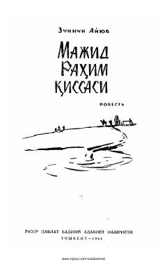

MRIroq dehqonlarining hayoti va erkinlik uchun kurashlari haqidagi ta'sirli qissa.
Ushbu qissada yozuvchi Zunnun Ayyub Iroq dehqonlarining og'ir hayoti, ularning yer va erkinlik uchun olib borgan kurashlari hamda jamiyatdagi adolatsizliklarni tasvirlaydi. Asar muallifning o'z hayotiy tajribalari va kuzatuvlari asosida yozilgan bo'lib, xalqning dard-alamlari va orzu-umidlarini yoritib beradi.